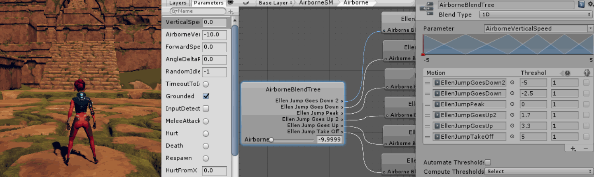
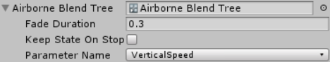

This page is part of the 3D Game Kit example.
Original
Rather than having individual states for Jump and Fall animations, the character only has one Airborne Blend Tree which uses the character's AirborneVerticalSpeed to control its blending. This is a useful setup because it means that you can tweak the physics details like gravity and jump speed and the animation will still be correct for any given point in the jump arc.

Note that it actually has two vertical speed parameters: VerticalSpeed and AirborneVerticalSpeed. The latter is used in the Airborne Blend Tree and various other places while the former isn't set by any script and seems to be unused, however there is no way to actually make sure without manually going through every transition in the Animator Controller.
Every PlayerController.FixedUpdate calls CalculateVerticalMovement which is responsible for enforcing a constant downward speed while grounded to stick to the ground, checking if the PlayerInput wants to jump, applying gravity while airborne, and applying additional downward acceleration if the player jumps and releases the button before they reach the peak of the jump:
void CalculateVerticalMovement()
{
// If jump is not currently held and Ellen is on the ground then she is ready to jump.
if (!m_Input.JumpInput && m_IsGrounded)
m_ReadyToJump = true;
if (m_IsGrounded)
{
// When grounded we apply a slight negative vertical speed to make Ellen "stick" to the ground.
m_VerticalSpeed = -gravity * k_StickingGravityProportion;
// If jump is held, Ellen is ready to jump and not currently in the middle of a melee combo...
if (m_Input.JumpInput && m_ReadyToJump && !m_InCombo)
{
// ... then override the previously set vertical speed and make sure she cannot jump again.
m_VerticalSpeed = jumpSpeed;
m_IsGrounded = false;
m_ReadyToJump = false;
}
}
else
{
// If Ellen is airborne, the jump button is not held and Ellen is currently moving upwards...
if (!m_Input.JumpInput && m_VerticalSpeed > 0.0f)
{
// ... decrease Ellen's vertical speed.
// This is what causes holding jump to jump higher that tapping jump.
m_VerticalSpeed -= k_JumpAbortSpeed * Time.deltaTime;
}
// If a jump is approximately peaking, make it absolute.
if (Mathf.Approximately(m_VerticalSpeed, 0f))
{
m_VerticalSpeed = 0f;
}
// If Ellen is airborne, apply gravity.
m_VerticalSpeed -= gravity * Time.deltaTime;
}
}
Checking when the vertical speed is approximately 0 to set it to exactly 0 seems totally pointless because the threshold is so small that it will rarely happen and even if it does it will only be for a single frame and will not look notably different anyway.
After that method, OnAnimatorMove adds the m_VerticalSpeed to the movement it executes that frame and also sets it as the AirborneVerticalSpeed parameter in the Animator Controller to control the Blend Tree.
Animancer
Animancer manages the above logic using the AirborneState script which uses a Blend Tree in the same way, except that the Animator Controller contains only that Blend Tree and nothing else:
using Animancer;
using UnityEngine;
public sealed class AirborneState : CreatureState
{
[SerializeField] private RuntimeAnimatorController _AirborneBlendTree;
private ControllerState _ControllerState;
private static readonly int VerticalSpeedParameter = Animator.StringToHash("VerticalSpeed");
private void Awake()
{
_ControllerState = new ControllerState(Animancer, _AirborneBlendTree);
}
private void ApplyVerticalSpeed()
{
_ControllerState.Playable.SetFloat(VerticalSpeedParameter, Creature.VerticalSpeed);
}
[SerializeField] private float _JumpSpeed = 10;
[SerializeField] private float _JumpAbortSpeed = 10;
[SerializeField] private float _TurnSpeedProportion = 5.4f;
[SerializeField] private LandingState _LandingState;
[SerializeField] private RandomAudioPlayer _EmoteJumpAudio;
private bool _IsJumping;
private void OnEnable()
{
_IsJumping = false;
Animancer.CrossFade(_ControllerState);
ApplyVerticalSpeed();
}
public override bool StickToGround { get { return false; } }
public override Vector3 RootMotion
{
get
{
return Creature.Brain.Movement * (Creature.ForwardSpeed * Time.deltaTime);
}
}
private void FixedUpdate()
{
if (_IsJumping)
{
if (Creature.VerticalSpeed <= 0)
_IsJumping = false;
}
else
{
if (_LandingState != null)
{
if (Creature.StateMachine.TrySetState(_LandingState))
return;
}
if (Creature.CheckMotionState())
return;
if (Creature.VerticalSpeed > 0)
Creature.VerticalSpeed -= _JumpAbortSpeed * Time.deltaTime;
}
ApplyVerticalSpeed();
Creature.UpdateSpeedControl();
var input = Creature.Brain.Movement;
var turnSpeed = Vector3.Angle(Creature.transform.forward, input) * (1f / 180) *
_TurnSpeedProportion *
Creature.CurrentTurnSpeed;
Creature.TurnTowards(input, turnSpeed);
}
public bool TryJump()
{
if (Creature.CharacterController.isGrounded &&
Creature.StateMachine.TryResetState(this))
{
_IsJumping = true;
Creature.VerticalSpeed = _JumpSpeed;
_EmoteJumpAudio.PlayRandomClip();
return true;
}
return false;
}
public void CancelJump()
{
_IsJumping = false;
}
}
Checking when the vertical speed is approximately 0 to set it to exactly 0 seems totally pointless because the threshold is so small that it will rarely happen and even if it does it will only be for a single frame and will not look notably different anyway.
Controller State
Since plenty of other examples demonstrate how to use Transitions, this one instead shows how to create a ControllerState and access its parameters manually.
Firstly we need several fields:
| Field | Purpose |
|---|---|
[SerializeField] private RuntimeAnimatorController _AirborneBlendTree; |
A reference to the Animator Controller containing the same Blend Tree used by the original character, but nothing else. |
private ControllerState _ControllerState; |
The AnimancerState that will play the Animator Controller and provide access to its parameters. |
private static readonly int VerticalSpeedParameter = Animator.StringToHash("VerticalSpeed"); |
The hash code of the VerticalSpeed parameter to allow us to access it more efficiently than using the name every time. |
On startup we create the ControllerState using the creature's AnimancerComponent which will implicitly attach the state to its default layer and also the RuntimeAnimatorController we want it to play:
private void Awake()
{
_ControllerState = new ControllerState(Animancer, _AirborneBlendTree);
}
Whenever this state is entered it passes the _ControllerState into the AnimancerComponent.CrossFade method to transition to it (over the default 0.25 second fade duration) just the same as we would if it were an AnimationClip:
private void OnEnable()
{
Animancer.CrossFade(_ControllerState);
}
Then every FixedUpdate we need to tell the Animator Controller what the vertical speed is:
private void ApplyVerticalSpeed()
{
_ControllerState.Playable.SetFloat(VerticalSpeedParameter, Creature.VerticalSpeed);
}
Float Controller State
Since the main purpose of that ControllerState is to provide access to a single float parameter, it would be more convenient to use a Float1ControllerState which would replace all of the above with this:
[SerializeField] private RuntimeAnimatorController _AirborneBlendTree;
private Float1ControllerState _ControllerState;
private void Awake()
{
_ControllerState = new Float1ControllerState(Animancer, _AirborneBlendTree, "VerticalSpeed");
}
private void OnEnable()
{
Animancer.CrossFade(_ControllerState);
}
private void ApplyVerticalSpeed()
{
_ControllerState.Parameter = Creature.VerticalSpeed;
}
Note how we no longer need the static VerticalSpeedParameter to cache the hash code because we pass the parameter name into the Float1ControllerState constructor and then we are able to get and set that parameter using _ControllerState.Parameter = ....
Transition
Transitions (specifically, a Float1ControllerState.Transition) can simplify this setup even further:
[SerializeField] private Float1ControllerState.Transition _AirborneBlendTree;
private void OnEnable()
{
Animancer.Transition(_AirborneBlendTree);
}
private void ApplyVerticalSpeed()
{
_AirborneBlendTree.State.Parameter = Creature.VerticalSpeed;
}
This gives us several advantages over the manual approaches above:
- We only need a single field.
- We call
AnimancerComponent.Transitioninstead ofCrossFadewhich automatically creates theControllerStateso we do not need theAwakemethod either. CrossFadetakes afadeDurationparameter which is hard coded to 0.25 seconds by default, but the transition has an Inspector field to allow it to be tweaked by non-programmers.- The parameter name is handled by a dropdown menu in the Inspector so it's not hard coded and you get a clear list of all available parameters. This means the code isn't tied to a specific parameter name and you do not have the chance to misspell it.

Updates
There are several aspects to this state every update.
Firstly, we override the StickToGround property to always be false and the RootMotion property to go whichever direction the Creature.Brain is trying to move as explained on the Movement page.
Then the FixedUpdate method executes the main logic of this state.
It starts by making sure that when you jump, do not start checking if you have landed until you stop going up:
private void FixedUpdate()
{
if (_IsJumping)
{
if (Creature.VerticalSpeed <= 0)
_IsJumping = false;
}
Otherwise, if there is a Landing state we try to enter it, which that script won't allow until the CharacterController is grounded. Or if we do not have a specific state for landing, just check the default transitions to Idle or Locomotion.
else
{
if (_LandingState != null)
{
if (Creature.StateMachine.TrySetState(_LandingState))
return;
}
else
{
if (Creature.CheckMotionState())
return;
}
Note that the LandingState isn't referenced by any other scripts. It isn't a standard state that every Creature needs and nothing else needs to directly know about it.
Here we also apply some additional downward acceleration (on top of the regular graivty applied in Creature.OnAnimatorMove) if the player releases the jump button early (this is still inside the block where _IsJumping is false, meaning the jump was cancelled):
if (Creature.VerticalSpeed > 0)
Creature.VerticalSpeed -= _JumpAbortSpeed * Time.deltaTime;
}
Lastly, we send the vertical speed to the Animator Controller for the Blend Tree to use and update the Creature's speed and turning. Since we do not have quick turn animations like the LocomotionState, we just increase the turn speed when the direction we want to go is further away from the direction we are currently facing.
ApplyVerticalSpeed();
Creature.UpdateSpeedControl();
var input = Creature.Brain.Movement;
var turnSpeed = Vector3.Angle(Creature.transform.forward, input) * (1f / 180) *
_TurnSpeedProportion *
Creature.CurrentTurnSpeed;
Creature.TurnTowards(input, turnSpeed);
}
Jumping
The original character's implementation of jumping was extremely disorganised and hard to follow:
PlayerInput.Updatechecks for a button press to set aboolfield with a public wrapper property.- Searching for references to that property finds one in
PlayerController.CalculateVerticalMovementwhich makes sure the button had been released at some point since the last jump (PlayerInputshould have handled that). - It also checks to make sure the character isn't attacking.
- Then it sets the
m_VerticalSpeed = jumpSpeed;andm_IsGrounded = false;. - If you search for the actual call to
CalculateVerticalMovementyou'll find it in the middle ofFixedUpdate. Note that this means it can miss fast keypresses if they happen during oneUpdateand another one occurs before the nextFixedUpdate. - That method doesn't actually tell the Animator Controller anything, but if you search for references to
m_IsGroundedyou can find thatOnAnimatorMove(which is called separately afterFixedUpdateis done) passes it on to the Animator Controller. - If you look at the Animator Controller you can find that once the
IsGroundedparameter is set, the Animator Controller will transition to the Airborne state ... except that sometimes it doesn't. - At the end of the
FixedUpdateit callsPlayAudiowhich checksif (!m_IsGrounded && m_PreviouslyGrounded && m_VerticalSpeed > 0f)in order to play the jump sound.
The Animancer implementation is much easier to follow:
KeyboardAndMouseBrainchecks for a button press to callCreature.Airborne.TryJump();.- That method clearly defines everything involved in jumping:
You can only jump while grounded:
public bool TryJump()
{
if (Creature.CharacterController.isGrounded &&
Then we try to enter this state. We didn't override CanEnterState to check if the Creature is grounded because this state is also used if you walk off a ledge, so instead we check that condition here when specifically attempting to jump. That means this state will always allow itself to be entered, so we are only depending on the previous state's CanExitState to return true. Unlike the original character, this method doesn't specifically care if the character is attacking, it simply lets the state machine ask if the previous state will allow the change. If you add some other ability or action that doesn't want to be interrupted, this method will continue working properly without needing to be modified.
Creature.StateMachine.TryResetState(this))
If the state is changed, it will enable this script (because it inherits from StateBehaviour) which will call its OnEnable method.
Now that we are in this state, flag it as a jump (so it can be cancelled to apply additional downward acceleration), apply the jump speed, and play a jump sound:
{
_IsJumping = true;
Creature.VerticalSpeed = _JumpSpeed;
_EmoteJumpAudio.PlayRandomClip();
And finally, use the return value to indicate whether the jump was successful:
return true;
}
return false;
}
Then if you want to know what happens over time during the jump, you can simply examine the rest of this class, particularly the FixedUpdate method.